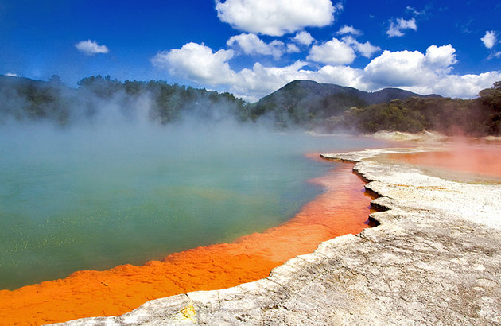

Queenstown is New Zealand's adventure capital and one of the country's top destinations for international visitors.I would like to see the stunning alpine scenery on the excellent network of hiking trails.While i will be there i will never miss Bungee jumping, jet boating, white-water rafting, paragliding, rock climbing, mountain biking, and downhill skiing.

Rotorua is one of the most active geothermal regions in the world. This is a land where the earth speaks. I hope to see Boiling mud pools, hissing geysers, volcanic craters, and steaming thermal springs betray the forces that birthed much of New Zealand's dramatic topography.Hopefully,Trout fishing, Sky-diving, luging, and mountain biking are the activities i will never miss while i will be there.
the country's tallest mountain Aoraki/Mount Cook and longest glacier, the Tasman Glacier, lie within its borders making this a top destination for mountaineering. Sir Edmund Hillary trained here for his legendary Mount Everest ascent.scenic flights, ski touring, heli-skiing, hunting, hiking, and stargazing trips are the things that i will do while i will be there.
Auckland, the "City of Sails," is New Zealand's largest city and the most populous Polynesian city in the world. Blond- and black-sand beaches, rainforest hiking trails, picturesque coves, islands, and volcanoes surround the city are the things that i will do while i will be there.i will be on the top of Sky Tower for spectacular views across the city and hinterland.